ГЕОМЕТРИЧЕСКОЕ СНИЖЕНИЕ ТОЧНОСТИ (GDOP)
Индивидуальное творческое задание по курсу
"Сетевые информационные технологии"
Группа: ЭР-11-19
Москва 2021 г.
Содержание
Введение

Радионавигационные системы разделяют на две группы: спутниковые системы (GPS, ГЛОНАСС) и системы внутреннего позиционирования.
Система внутреннего позиционирования (Indoor positioning system, IPS)
— локальная система нахождения местоположения внутри зданий и закрытых сооружений, где практически недоступна спутниковая система навигации.
На сегодняшний день разработка таких систем одно из актуальнейших направлений радионавигации.
IPS используются для мониторинга работников и персонала на производствах, а также для навигации робототехники на автоматизированных складах.
Одно из самых перспективных и новых направлений радионавигации - это сверхширокополосные(СШП) системы, которые по сравнению с Bluetooth и Wi-fi более точные (достижение сантиметровой точности).
СШП системы, как правило, включают в себя подсистемы маяков и меток, эти системы инфраструктурны, то есть для их работы необходимо заранее расставить опорные маяки.
Зная координаты заранее расставленных опорных маяков и обработав информацию, полученную (посредствам радиосвязи) маяками от движущихся меток, можно определить координаты этих меток.
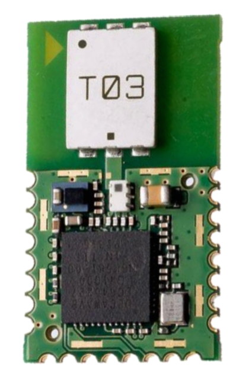
СШП приёмо-передатчик от ирландской компании
DecaWave
В зависимости от встроенного программного обеспечения устройство может выполнять либо роль маяка: принимать радиосигналы от движущихся меток,
либо роль метки: посылать радиосигналы опорным маякам.
Существует множество факторов, влияющих на расстановку опорных маяков. Среди них выделяют два самых важных:
·Прямая видимость
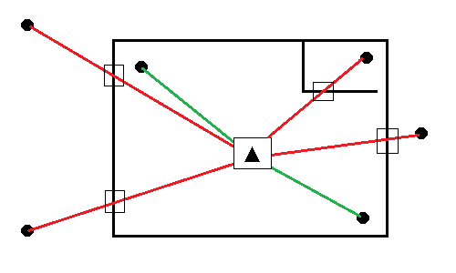
Стены, колонны, мебель - все это препятствует нормальному прохождению радиосигналов и способствует их переотражению.
·Геометрический фактор
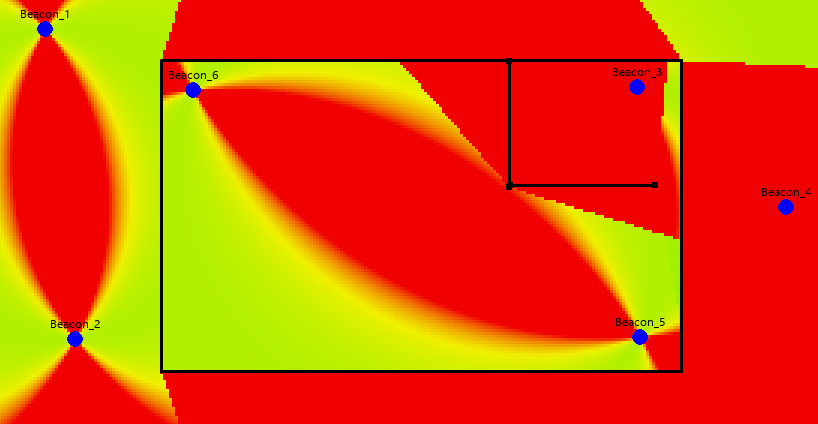
Понижение точности (DOP) или геометрическое снижение точности (GDOP) показывает во сколько раз погрешность определения координат метки выше,
чем погрешность первичных измерений и зависит от взаимного расположения метки относительно маяков.
На фото геометрический фактор рассчитан для каждой точки плоскости (с учетом прямой видимости).
Методы определения текущего местоположения объекта

Прежде чем углубляться в расчеты геометрического снижения точности, стоит рассмотреть методы определения текущего местоположения объекта.
Таких методов несколько:
· Метод счисления пути
· Обзорно-сравнительный метод
· Позиционный метод
Последний особенно широко используется в локальной радионавигации.
Позиционный метод основан на определении местоположения объекта путем засечек, представляющих собой точку пересечения двух или
более линий (поверхностей) положения, относительно известных ориентиров.
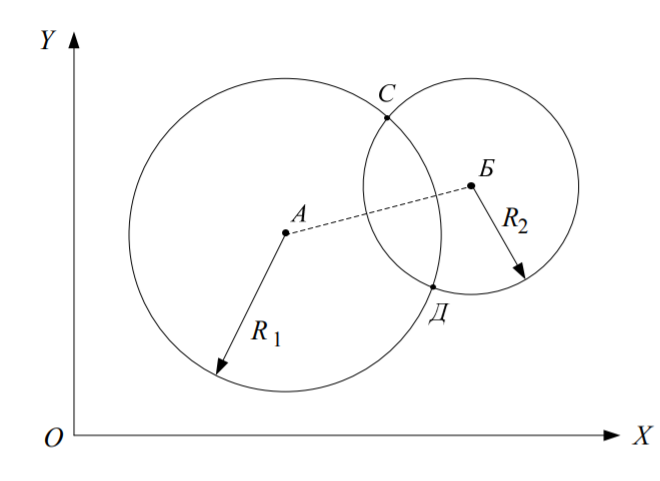
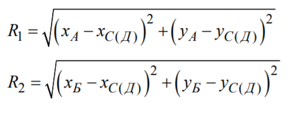
Координаты точек А и Б известны (радиомаяки).
Измеряются дальности R1 и R2.
Объект находится в точке С или Д.
Добавив третий радиомаяк, можно избавиться от неопределенности и по пересечению трех окружностей определить положение объекта.
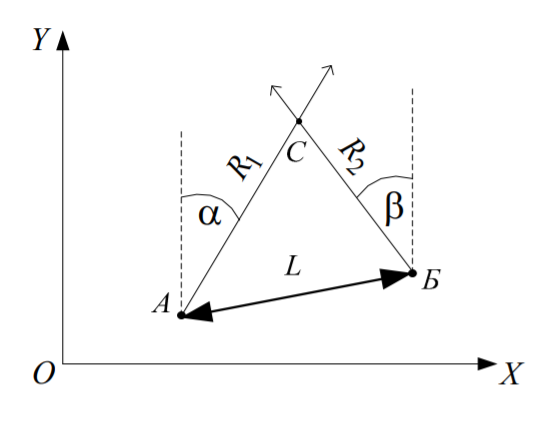
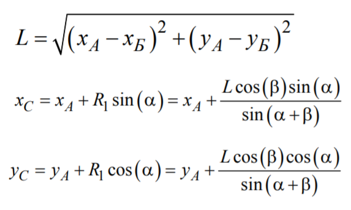
Координаты точек А и Б известны (радиомаяки).
Измеряются углы α и β.
Объект находится в точке С.
Среди достоинств и недостатков позиционного метода можно выделить следующее:
| Достоинства: |
Недостатки: |
| · Не требуется знание пройденного ранее пути |
· Необходима инфраструктура (радиомаяки, средства информационного обеспечения) |
| · Ошибка не накапливается со временем |
· Низкая помехозащищенность |
Типы позиционных методов
Среди множества позиционных методов рассмотрим два самых используемых:
Дальномерный метод
Дальномерный метод позволяет определить пространственные координаты объекта путём измерения
дальностей R1, R2, R3 до трёх точек с известными координатами: {x1, y1, z1} {x2, y2, z2} {x3, y3, z3}
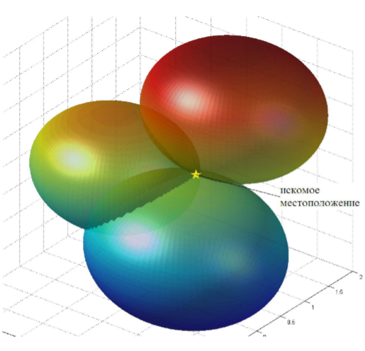
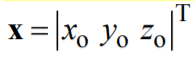
- неизвестные координаты объекта, находятся из решения системы уравнений:
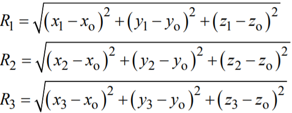
Итерационный метод решения:
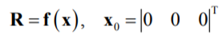
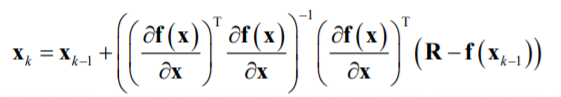
Разностно-дальномерный метод
Разностно-дальномерный метод основан на использовании разностей расстояний объекта до пар
точек с известными координатами. На входе: разности дальностей, на выходе: координаты объекта.
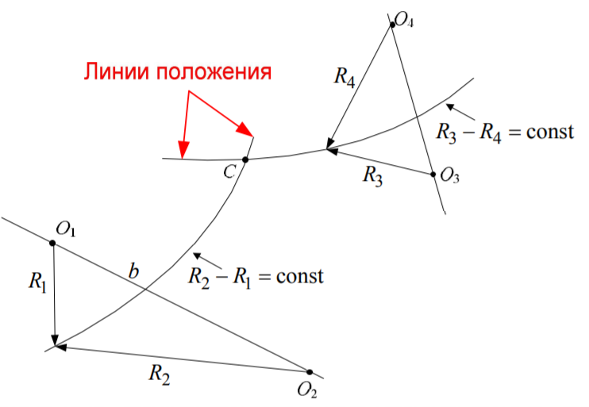
Линии положения – гиперболы. Объект находится в точке пересечения линий положения.
* Разностно-дальномерный метод применяют, когда дальности до маяков
найти нельзя, но можно найти разности дальностей.
Геометрический фактор и методы решения (2D)
Не при любой геометрии взаимного расположения радиомаяков и объекта решение навигационной задачи возможно
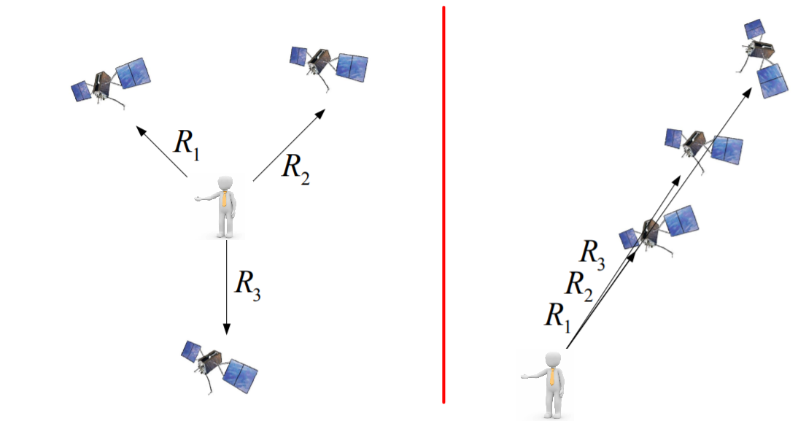
Для нахождения геометрического фактора(GDOP) используется следующий алгоритм:
Расстояние между точкой и i-ым маяком c координатами:
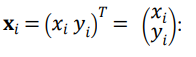
Если у есть N опорных точек, то вектор измерений y содержит N элементов:
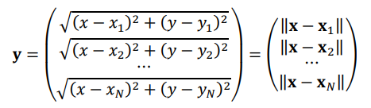
По факту имеем функцию:
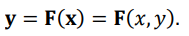
Для вычисления геометрического фактора необходимо составить градиентную матрицу H,
которая является производной от функции F по вектору координат x.
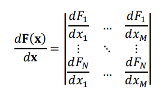
В нашем случае:
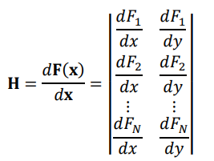
где Xм, Yм - координаты мастер-маяка. Он принимает от вспомогательных маяков их координаты и отправляет на сервер. Если у вспомогательного маяка нет доступа к мастер-маяку, он перестает участвовать в расчетах видимости.
Если есть градиентная матрица, то можно рассчитать геометрический фактор по формуле:
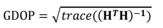
trace – это оператор, который осуществляет сложение квадратов диагональных элементов матрицы.
В итоге получим число, которое, как говорилось ранее, показывает во сколько раз погрешность определения координат метки выше, чем погрешность первичных измерений.
Интерпретация
| Значение GDOP |
Рейтинг |
Описание |
| <1 |
Идеальный |
Максимально возможный уровень достоверности для использования в приложениях, где всегда требуется максимально возможная точность |
| 1-2 |
Отличный |
На этом уровне достоверности позиционные измерения считаются достаточно точными, чтобы соответствовать всем приложениям, кроме наиболее чувствительных |
| 2-5 |
Хороший |
Представляет уровень, который отмечает минимум, подходящий для принятия точных решений. Позиционные измерения могут использоваться для предоставления пользователю надежных рекомендаций по навигации по маршруту |
| 5-10 |
Умеренный |
Позиционные измерения можно использовать для расчетов, но качество фиксации все же можно улучшить. Рекомендуется более открытый вид на небо |
| 10-20 |
Плохой |
Представляет низкий уровень достоверности. Позиционные измерения следует отбросить или использовать только для очень приблизительной оценки текущего местоположения |
| >20 |
Бедный |
На этом уровне измерения неточны на целых 300 метров с помощью устройства с 6-метровой точностью (50 DOP × 6 метров), и от них следует отказаться |
При навигации в помещениях значения GDOP более 20 дает очень большую погрешность, поэтому нужно выбирать конфигурацию опорных маяков, позволяющую получить наименьшее значение GDOP.
Рассчитав значение геометрического фактора на всей исследуемой плоскости (например, через каждый сантиметр), можно построить тепловую карту и определить области с хорошей и плохой видимостью (красный цвет - плохая видимость, зеленый - хорошая видимость).

Тепловая карта распределения геометрического фактора. Конфигурация: 6 опорных маяков. Дальномерный метод

Тепловая карта распределения геометрического фактора. Конфигурация: 6 опорных маяков. Разностно-дальномерный метод
Сравнение дальномерного и разностно-дальномерного методов
Как видно из вышеприведенных фотографий, тепловые карты распространения геометрического фактора при дальномерном и разностно-дальномерном методах расчетов различаются.
Для наглядности расставим опорные маяки по окружности и построим зависимости значения геометрического фактора от расстояния от центра окружности. Зависимости построим при разном количестве опорных маяков.
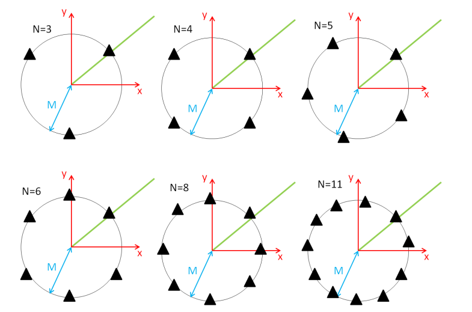
N - количество опорных маяков, M - радиальная линия (предположим M = 10 метров), зависимость геометрического фактора от расстояния от центра окружности - вдоль зеленой линии.
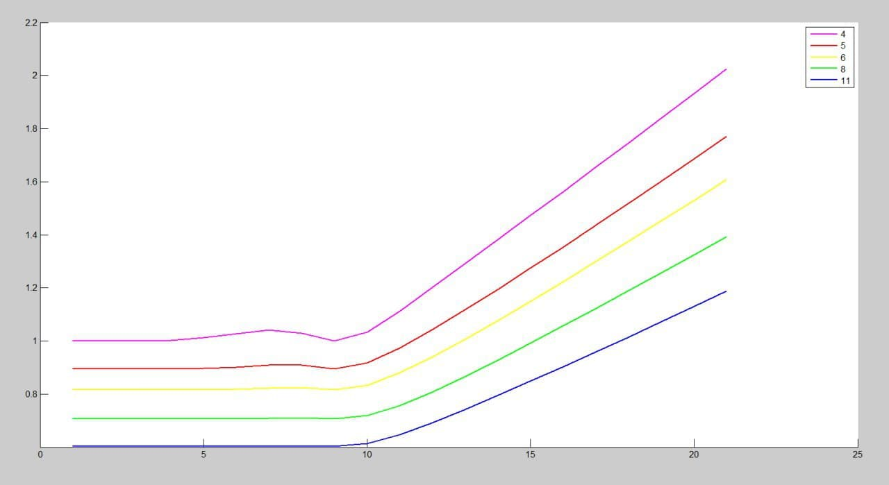
Зависимость значения геометрического фактора от расстояния от центра окружности, на которой расположены опорные маяки. Дальномерный метод
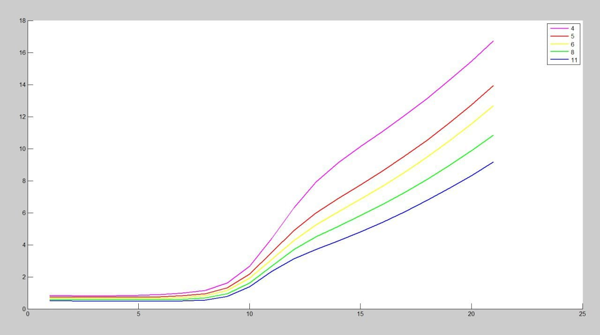
Зависимость значения геометрического фактора от расстояния от центра окружности, на которой расположены опорные маяки. Разностно-дальномерный метод
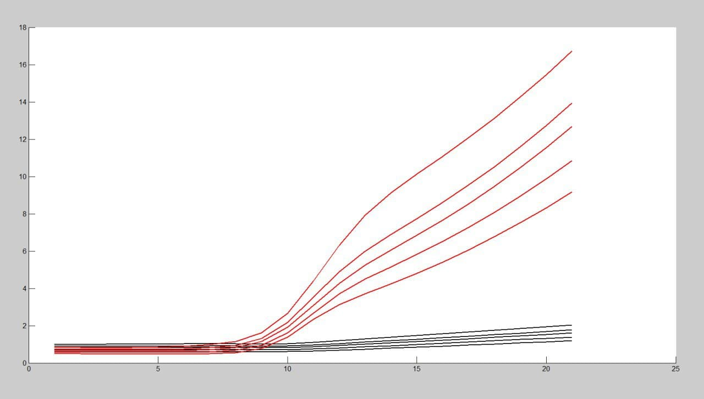
Зависимость значения геометрического фактора от расстояния от центра окружности, на которой расположены опорные маяки. Дальномерный метод (черные линии) и Разностно-дальномерный метод (красные линии) на одном графике
По полученным зависимостям можно сделать следующие выводы:
- Значение GDOP увеличивается с ростом расстояния от центра окружности до точки расчета.
- При расчете по разностно-дальномерному методу значение GDOP очень мало на расстоянии, не превышающем радиус окружности. Далее идет резкий рост GDOP, что ухудшает видимость.
- При расчете по дальномерному методу значение GDOP внутри окружности чуть больше, чем при расчете по разностно-дальномерному методу, но при расстоянии, большем радиуса окружности, GDOP увеличивается с меньшей скоростью, что дает хорошую видимость и за пределами окружности.
- Чем больше опорных маяков, тем меньше значение геометрического фактора.
Учет прямой видимости при расчете геометрического фактора
В большинстве помещений присутсвуют различные перегородки, стены и колонны, которые препятствуют передачи информации между маяками. Поэтому необходимо учитывать этот фактор.
Рассмотрим несколько планов помещений и конфигураций опорных маяков, рассчитаем тепловую карту распределения геометрического фактора с учетом прямой видимости.
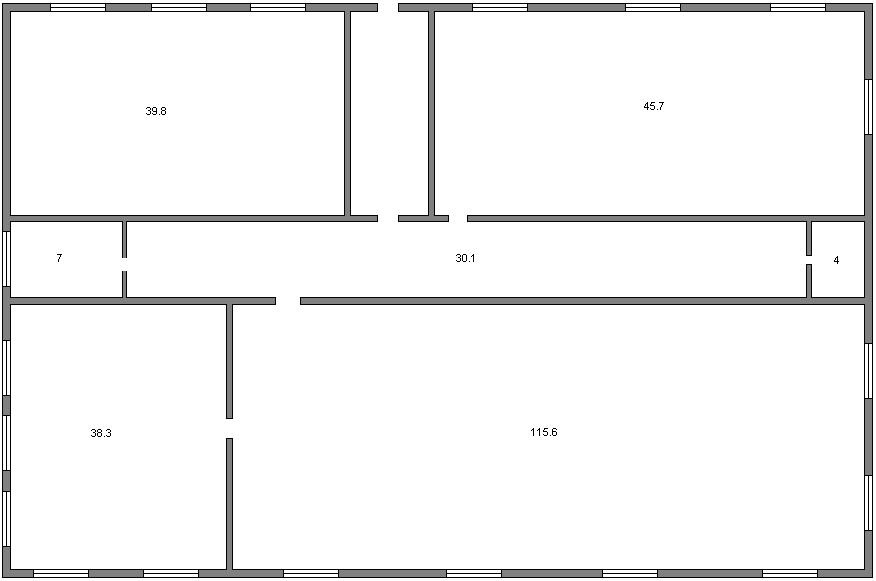
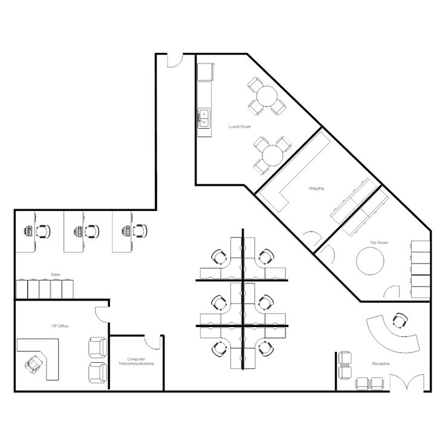
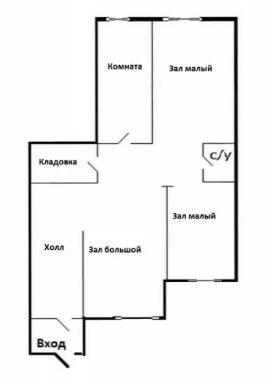
Как можно заметить, при недостаточном количестве опорных маяков в комнатах появляются зоны с плохой видимостью, поэтому нужно подбирать оптимальную конфигурацию опорных маяков для каждого помещения.
Выводы
Основными целями индивидуального творческого задания являлись: поиск информации по выбранной теме в сети Internet, адекватное структурирование найденной в Internet информации и ее изложение на гипертекстовом языке разметки документов.
Для поиска информации использовалась поисковая система "Яндекс" с запросами "GDOP" и "Геометрический фактор". Среди сложностей можно выделить слишком углубленную и труднопонимаемую информацию, представленную на некоторых источниках и нехватку знаний в области навигации.
На большинстве сайтов давалась только часть информации по нужной теме, поэтому необходимо использовать несколько источников для более полного изложения и понимания информации.
Для написания индивидуального творческого задания использовалась интегрированная среда разработки PyCharm, позволяющая создавать web-страницы на HTML.
Список используемых источников